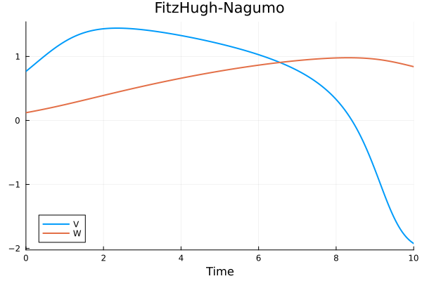
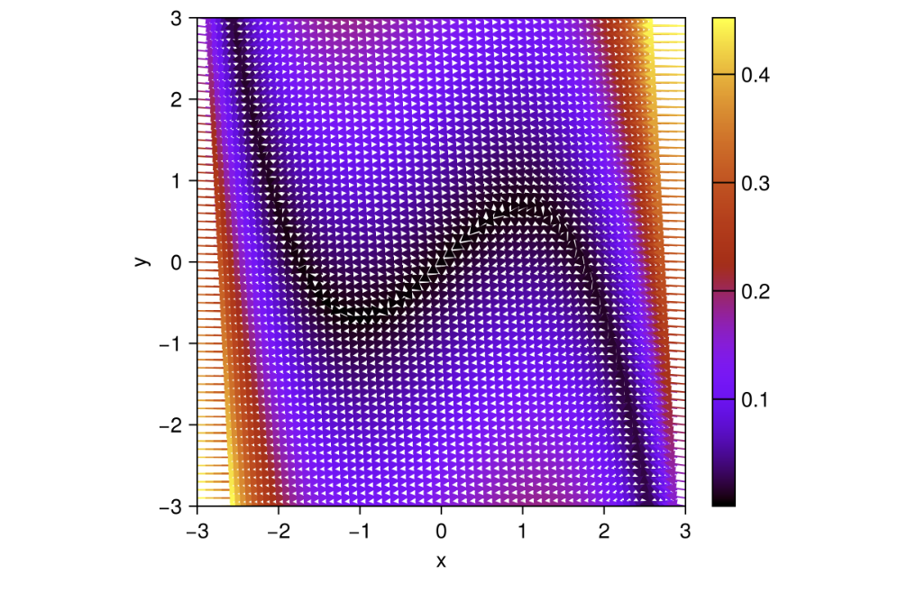

Building a differentiable model
In this tutorial, we will set up a differentiable FitzHugh-Nagumo model using the NeuroDynamics package and plot the phase portrait of the model before training.
using NeuroDynamics, Lux, Random, Plots, DifferentialEquations, ComponentArrays, Base.Iterators, CairoMakieWe will create the model initialized using the default parameters. To change the parameters, we can pass the desired values to the FitzHughNagumo constructor.
rng = MersenneTwister(3)
vector_field = FitzHughNagumo()
model = ODE(vector_field, Tsit5())
p, st = Lux.setup(rng, model)
p = p |> ComponentArraySetup the initial conditions, inputs and the time span for the simulation. We will set up the input to nothing for now (an unforced system). We will then plot the solution.
ts = 0.0:0.1:10.0
x0 = rand(2, 1)
u = nothing
sol = model(x0, u, ts, p, st)[1]
plot(sol, idx=[1,2], xlabel="Time", title="FitzHugh-Nagumo", label=["V" "W"], linewidth=2)
We can also plot the phase portrait of the model using the phaseplot function.
v_ranges = -3.0:0.1:3.0
w_ranges = -3.0:0.1:3.0
x₀_ranges = collect(product(v_ranges, w_ranges))
phaseplot(model, x₀_ranges, u, ts, p, st)